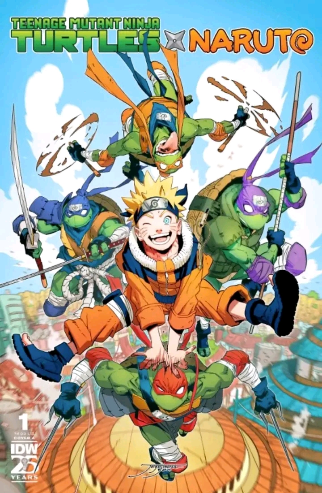
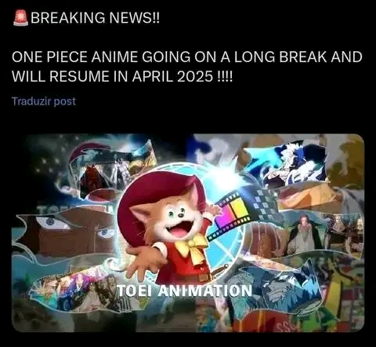

Pai dos animes!!
NOTÍCIA! Foi anunciado oficialmente que os ninjas mais famosos do mundo, Naruto e as Tartarugas Ninjas irão fazer um crossover em HQ! É isso mesmo! E o lançamento da 1º edição está previsto para chegar em 13 de Novembro de 2024 nos EUA, e este evento só ocorreu graças a uma parceria entre as editoras americanas VIZ Media e a IDW, que irá render em uma série em 4 edições. E juntamente com esse anúncio foi também revelado uma arte em capa, junto com as artes dos personagens. E o crossover está intitulado “Teenage Mutant Ninja Turtles x Naruto ”. Está e a sinopse oficial do crossover: É o confronto ninja mais legal que você poderia ter sonhado, se tivesse ousado! Os Heróis em Meia-Casca encontram o anfitrião da Raposa de Nove Caudas no crossover sobre o qual todos estarão falando. Quando a repórter adolescente April O’Neil tem um encontro clandestino com Tsunade, a líder da Vila Oculta da Folha, isso atrai a atenção de Naruto, Sasuke, Sakura e Kakashi. Eles não são os únicos que estão se perguntando o que as duas mulheres estavam discutindo, no entanto. O sinistro Clã do Pé tem seu próprio interesse na visita de April, pois eles acham que ela pode ter informações valiosas sobre a pesquisa de mutação que está sendo conduzida pelo cientista Baxter Stockman. Com April presa entre as forças da Vila Oculta da Folha e do Clã do Pé, não pode demorar muito para que as Tartarugas Ninja apareçam para lhe dar uma mão!
Já tem data!!
Kimetsu no Yaiba – Infinity Castle: Data de Lançamento em Breve! A aguardada trilogia Kimetsu no Yaiba – Infinity Castle terá sua data de lançamento japonesa revelada em 1º de março. Após o sucesso estrondoso de Mugen Train, essa nova adaptação promete batalhas épicas e uma animação de tirar o fôlego, levando os fãs ao clímax da história. A Sony Pictures Brasil confirmou que os filmes serão exibidos nos cinemas brasileiros, cobrindo os arcos finais do mangá: Castelo Infinito (47 capítulos) Contagem Regressiva para o Nascer do Sol (22 capítulos) Prepare-se para o desfecho emocionante de Demon Slayer! #KimetsuNoYaiba #DemonSlayer #InfinityCastle #Anime #Filme #CasteloInfinito #MugenTrain #SonyPictures #Shonen.
One piece
O anime de One Piece entrará em hiato até Abril de 2025. De acordo com o estúdio, a decisão foi tomada para permitir à equipe do anime que descanse. A Toei também diz que quer cuidar com mais atenção do arco de Egghead, mas não fez mais comentários sobre o assunto. Este é o maior hiato da história do anime, que mantém uma produção semanal de episódios. Por conta disso, a emissora confirmou que vai reprisar nos próximos meses o arco da Ilha dos Homem Peixe, um dos primeiros da série, em um formato definido como uma edição especial e remasterizada. A interrupção não envolve o mangá, que segue com a agenda normal de publicação. #site de notícias da cultura nerd "Omelete" ... Podem verificar em outros sites de notícias de anime e é a msm coisa
Vai voltar!
⭕Após um longo período de espera, Hunter x Hunter finalmente tem data marcada para sair do hiato. O mangá retorna em 7 de outubro junto com o volume 38 do mangá. A obra voltará a ser publicada na Shonen Jump, o comunicado foi feito por um vídeo com ilustrações de Hunter x Hunter, além disso o volume 38 contará com o personagem Gon na capa. Há alguns meses o mangaká Yoshihiro Togashi atualiza os fãs sobre o andamento dos capítulos, apesar de não conceder informações concretas sobre o retorno oficial. Desde 2006, longos períodos sem publicações se tornaram frequentes devido a problemas de saúde de Togashi, sendo o hiato de 2018 o mais drástico, uma vez que o mangá só retornou em 2022, quando o último capítulo foi lançado. #fypシ゚ #otakuanime #geek #nerd #hunterxhunter #mwilamania